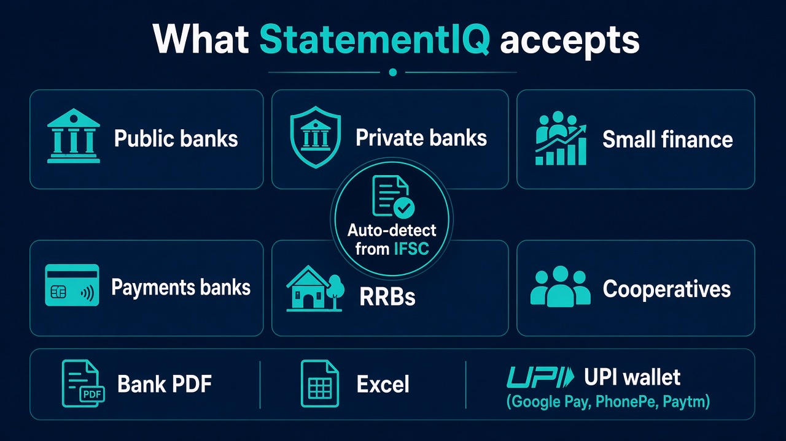

Quick answer: StatementIQ is a free bank statement analyzer for India. Upload a PDF, Excel, or UPI wallet export from 200+ Indian banks — public, private, small-finance, payments, RRBs, and cooperatives. The bank is auto-detected. Your first full statement is free, even if the PDF is 20–30 pages.
Most people do not bank only with HDFC or SBI. Salary hits one bank, EMIs leave another, and UPI lives in PhonePe or Google Pay. StatementIQ is built for that mix — not a short list of five brands.
What “200+ banks” actually means
StatementIQ accepts statements from 200+ Indian banks, not just the household names. Coverage includes:
- Public sector banks — including SBI
- Private banks — including HDFC, ICICI, Axis, and Kotak
- Small-finance banks
- Payments banks
- Regional rural banks (RRBs)
- Cooperative banks
You do not pick the bank from a dropdown. StatementIQ auto-detects the bank from the IFSC or the letterhead, then extracts the transactions.

Not only bank PDFs
A lot of Indian cashflow never sits in a classic passbook. StatementIQ also takes:
- Bank PDF — the statement you download from net banking
- Excel — when the bank gives a spreadsheet instead of a PDF
- UPI wallet exports — Google Pay, PhonePe, and Paytm
After extract, you get a FinHealth score, spend by UPI, IMPS, NEFT, card, and cash, recurring merchants, Hinglish AI chat, and a downloadable report PDF. UPI stays a payment mode — it is not dumped into a “food” or “shopping” bucket by mistake.
Pricing is per statement, not per page
A 30-page PDF is still one report. StatementIQ does not sell page credits.
- First report: free — one complete statement, no page cap
- After that: ₹49 per statement · 24-hour access
- Starter: ₹149 / month · 10 reports
- Plus: ₹249 / month · 25 reports
Promo codes work at checkout when you unlock a report or subscribe.
How to try your bank
- Open statementiq.in
- Upload the PDF, Excel, or wallet export
- Sign in — Google or email attaches that same file to your account
- See the FinHealth preview, then unlock the full report (first one free)
Statement data is removed after 24 hours. Report access is also 24 hours. No card is required for the first report.
FAQ
Will a smaller or rural bank work?
If it is among the 200+ supported Indian banks — including many RRBs and cooperatives — upload the PDF or Excel. Detection uses IFSC or letterhead, so you do not need to know an internal bank code.
What if my statement is password-protected?
Use the password when the upload form asks. The file has to open before transactions can be read.
Is this the same product as the launch post?
Yes. The product at statementiq.in now covers 200+ banks and wallet exports. The earlier launch note is here: StatementIQ launch.
Start on statementiq.in
Built by Nitesh Kumar Singh (NKSCoder) — bank statement analysis for India.